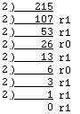

Not every aspect of the semantics of a programming language like Modula-2 can be abstractly specified at a high level in the language definition. There are always matters that must be left to the reasonable discretion of the implementor. Some of these (the code for the compiler and many of the library modules) are of little interest or practical use to the user of that implementation, and are private to the vendor. Other items are of more interest to the programmer employing the vendor's product, and these fall into three broad categories:
1. A numerical limitation on the use or complexity of data types or programming structures is called an implementation restriction.
The manufacturer will specify these restrictions in the documentation, and they may include among them some or all of:
The ISO standard imposes minimums on some of these items for a compiler to be able to claim conformance with the standard, but most implementations will have larger limits than those minimums. The user of the product must consult the manual to determine any such restrictions. In general, however, a program that fails because, for instance, it has too many WHILE loops nested one within another is probably not very well written, and would benefit from being re-thought.
For practical reasons, programmers often work at levels much lower than those assumed by the programs presented thus far. When doing so, it may be important to know more about the way that some data items are represented or stored.
2. Information provided on the range of possible values for a data type or the size of its storage is said to be implementation defined.
Again, the manufacturer should specify this data in the documentation; it may include among them some or all of:
At times, it is not possible to define in the standard what the exact behaviour of the compiler ought to be at certain points. For example, when passing parameters to procedures, these could be evaluated from left-to-right, or from right-to-left. The standard does not specify this one way or the other because the most convenient order may depend on the underlying hardware or operating system.
3. Behaviour that depends on the underlying machine and is potentially different on different machines is said to be implementation dependent.
Implementation dependent issues are, fortunately, few in number. Suffice it to say that any program whose meaning depends on knowing some detail of the underlying system or of its behaviour is erroneous, for that program will surely have a different meaning on another processor.
For instance, the code
MyProc (a, function(a))
where a is a variable parameter depends for its meaning on the order of parameter evaluations and is therefore erroneous.
However, there are a number of considerations among low level issues, particularly of the implementation defined nature, that are of interest to programmers, and the following sections will detail some of these.
This text has, on a number of occasions, commented on what were called a "hierarchy" of library modules that is available in a typical Modula-2 implementation. The broadest and most general of these are referred to as high-level, and the most specific, hardest-to-use and machine or operating system bound as low-level.
Languages are themselves categorized in much the same way and for much the same reasons. As has been seen already, a compiler is necessary to translate the instructions the programmer provides to transform (using any high level notation) into a series of more basic machine-level commands upon which the central processor itself may act directly. This latter set of commands is referred to as the machine language for that particular computer, and constitutes the lowest possible level of interaction between a programmer and the machine.
Computer languages or individual language constructions are called low level if they require for their correct use a knowledge of machine language, if they name or manipulate the machine's memory locations directly, or if their correct use involves a knowledge or use of details of that machine's hardware construction or the operating system.
To the degree by which the use of a language is independent of and isolated from any of these specific details, it is said to be high level.
Thus, the terms high level and low level may be used in varying degrees to apply to the way data representation and manipulation abstractions, and to machine representation and manipulation abstractions. On the one hand, the more abstractly a data type may be treated, the higher the level of its representation and manipulation. As previously noted, this at times requires a hierarchy of modules, and the use of any one of them depends on the level of detail a programmer needs at the time. Likewise, there are varying degrees to which language notations, and particular elements within them may be referred to as high or low level, and it is usually not difficult to decide whether a feature belongs to one or the other category.
High level instructions tend to use English words or near English words for their commands, and low level languages and commands employ more cryptic abbreviations that have meaning only in the context of a particular machine, type of machine, or operating system.
In general, low level language instructions are very detailed, very specific, and accomplish only a single step with each instruction. It might take hundreds of them to output a single character to the screen, for instance. High level instructions hide all this detail with a command like WriteCard or ReadString. The very large number of machine language codes needed to carry out the high level instruction are not visible to the programmer.
It should be noted that even machine languages have standard notations within which to express their syntax, and that programs expressed in such assembly languages also have to be translated for the machine. Such translators are called assemblers. This is still at a rather low level, though it is one step removed from trying to program the machine directly in its own numeric language. Even in this style, the programmer must know what are the assembly language abbreviations for the various machine language codes, and must also know a great deal about the particular hardware and the operating system under which the finished product will run.
High level instructions must be more general so as to handle many possibilities and this necessary complexity tends therefore to make their final translations into machine code slower to execute than custom designed low level ones, though they are very much easier to program. Generally, the major portions of very large programs are written in high level compiled languages, with the speed-sensitive parts done directly in machine code with an assembler. (The student will not be needing to do this in the present course, but should be aware of this practice.)
When a language or an operating system is adapted to a particular machine, it is necessary to know something about the architecture of that machine in order to ensure that the high level language produces the correct results on it. This adaptation is easier in Modula-2 than in many languages, because only certain low-level modules that provide the interface to the hardware and operating system need to be rewritten. Since Modula-2 compilers are themselves usually written in Modula-2, any non-machine specific portions of a compiler need not be re-written when moving the software system to another hardware platform. The same is true of programs. Only those portions of a program that make specific use of machine-dependent features need to be rewritten when adapting to another machine; the rest can remain untouched.
Generally, one does not need to rewrite the definition modules in doing this, only their implementations, for it is in these that knowledge of the particular system is expressed. In theory, client programs also do not need to be rewritten, though they will likely have to be re-compiled in order to produce the correct machine coding for their new environment.
The Modula-2 language has the additional advantage over traditional languages that it can itself be used either as a high level one (as thus far in this text), or to manipulate entities directly on a low level. This makes it possible to write systems software (such as operating systems) as well as applications programs in a single language--a decided advantage to the programmer, who now may not have to learn a separate low level language.
In order to understand some of these low level facilities, it is necessary to refine the model given earlier of the way in which a computer's memory is organized.
Every one of the thousands of individual locations or pigeon holes of which this memory consists of can actually be thought of as having several compartments, each of which is essentially just an on/off (actually low/high voltage) electrical switch. In practice, one can usually assume that several means exactly eight in this context.
The electrical state low or off is interpreted numerically as the value zero, and the electrical state high or on as the value one. Thus, each location is thought of as storing an eight digit binary (base two) number.
The binary numeral 01010011 is stored as in Figure 8.2
Counting in binary form provides the following translation table:
Decimal Binary 0 00000000 1 00000001 2 00000010 3 00000011 4 00000100 5 00000101 6 00000110 7 00000111 8 00001000 9 00001001 ... 15 00001111 16 00010000 ... 254 11111110 255 11111111
The binary (base two) system uses place value in the same manner as the more familiar decimal (base ten) system. Each place in the numeral has a value, and the place holder indicates the number of times that value is included in the total value represented by the numeral as a whole. For instance, a decimal numeral can be broken down into places as follows:
Anyone who is used to this system can abstractly, without having to think about the parts, translate this as:
(2 * 100000) + (4 * 10000) + (3 * 1000) + (0 * 100) + (5 * 10) + (6 * 1)
or, to use a more compact notation:
(2 * 105) + (4 * 104) + (3 * 103) + (0 * 102) + (5 * 101) + (6 * 100)
If, instead of ten, the base is two, the only changes that need to be made to this numeration system are to restrict the symbols to just 0 and 1, and to re-label the columns using the new base. Begin at the rightmost column, labelling it the ones column as before. Proceeding from right to left by powers of two, one has, successively, the twos, fours, eights, sixteens, thirty-twos, sixty-fours and hundred and twenty-eights columns. This is illustrated in figure 8.4, and the similarities to figure 8.3 can readily be seen.
Translating the numeral in this figure produces the representation:
(0 * 128) + (1 * 64) + (1 * 32) + (0 * 16) + (1 * 8) + (1 * 4) + (0 * 2) + (0 * 1)
or, better:
(0 * 27) + (1 * 26) + (1 * 25) + (0 * 24) + (1 * 23) + (1 * 22) + (0 * 21) + (0 * 20)
Observe that the exponents on the base are just the numbers of the component boxes used in figures 8.1 and 8.2. In the case of the computing machine (and any person who naturally thinks in base two), these numeric representations are sufficient and obvious abstractions for the value represented, just as is the earlier rendering of a number in a base ten numeral. If it is necessary to use base ten, the values in the non-zero columns can be individually translated into base ten and added to obtain
64 + 32 + 8 + 4 = 108 (base ten)
It can be readily seen that the possible numbers that can be represented in a single eight component memory location range from 000000002 (010 through 111111112 (128 + 64 + 32 + 16 + 8 + 4 + 2 + 1 = 25510).
To change numbers from decimal to binary notation, uses successive division by two and then examine the remainders.

Taking the remainders as shown in reverse order, one gets the result 21510 = 110101112. This algorithm was detailed in section 4.8, where a recursive procedure was written to accomplish the required conversion.
To complete this general discussion, it is appropriate to provide the standard definitions of the abstractions memory location and component as they have been used here.
A single memory component that stores a one or a zero is called a binary digit or bit. A sequence of eight of these abstracted as a single memory location and that can store a number from zero through 255 is called a byte.
For the sake of completeness in this discussion of groupings of bits, the following is also useful:
Half a byte (four bits) is called a nibble. The bits of a byte numbered zero through three starting from the right are the low nibble, and the bits numbered four through seven are the high nibble.
For various technical reasons, many machines and/or operating systems employ a basic unit of data consisting of two or more (but an even number) bytes taken together. Such machines can only store and retrieve data in these larger units, not in individual bytes. That is, although the common unit of a byte has the normal meaning for such a machine, it is incapable of using data chunks that small. Moreover, a data type that can only store 256 distinct items is not as useful as one with a larger range, so multi-byte storage may be employed at the language level, even when the underlying hardware does not require this.
A grouping of two or more adjacent bytes (memory locations) collectively employed as a single data storage unit is called a word, or, if thought of as storage, as a data location.
In general, words come in even numbers of bytes, often either two, four, or eight. If two bytes are placed side-by-side, and the column naming given above is continued from the rightmost (column 0) to the (new) leftmost (column 15), the place values range from 20 through 215. If there is a value of one in all sixteen places, and the result is converted to base ten, one finds that a two-byte word can store numbers in the range from 0 through 65535. This has been a common range for cardinal types in high level languages. Evidently, implementors of such notations found two byte words to be convenient for data storage, whatever the underlying hardware. When the same calculation is applied to the thirty-two bits of an four byte word, the range produced is 0 through 4 294 967 296--a much more satisfactory range for many types of calculations, and now more commonly used even on microcomputers.
The individual storage locations in the memory of a computer are each given a consecutive number, by which means its contents can be accessed.
The unique number identifying of a particular storage location is called its address.
A CPU accesses data by forming the bits of an address on a group of electrical lines (called the address bus). Data is either fetched from this memory location or stored into it depending on whether the CPU is in a read or a write state. It should be evident that the maximum amount of memory that a given type of machine can use depends on the number of different addresses its CPU can form.
While on the subjects of memory and the natural use of binary numbers to describe both what it does and the amount of it, note that 1024 (210) bytes of memory is called 1K. Thus, the 65 536 bytes that are addressable by an older type of typical eight bit processor (which usually had 16 electrical lines on the address bus) were referred to as 64K, and a megabyte (1M) of memory or disk space is actually 1 048 576 bytes. Two smaller units of memory/storage also have names that are worth remembering, as they may come up in describing programs:
A page of memory is 256 bytes. This is also a common unit of disk storage, and there it is often called a sector. Two of these sectors taken as a unit (512 bytes) may be referred to as a block.
NOTE: If the unit of disk storage is 512 bytes, 1024 bytes, or some larger number, then this unit may be called a sector and the name block may not be used.
Disks themselves are organized into a series of concentric rings or tracks on which the information is magnetically recorded. The number of bytes per sector, the number of sectors per track, the number of tracks on one side of a disk, and whether these disks are single or double sided, will together determine the total capacity of one surface or platter. In the case of a hard disk, there are often several platters stacked vertically, each with its own read/write head attached to an arm that moves them all together. All the tracks at a single location of the moving arm may be thought of as a cylinder. In that case, one usually calculates capacity by the size and number of cylinders. Unfortunately, all these parameters vary from one manufacturer to another, as do the precise formats used for the recording. In the early days of the industry, it was unlikely that a disk recorded by one type of machine will be readable by another type, or even by the same machine using a different operating system.
Such days are fortunately past, for the most part. Most operating systems are now robust enough to be able to recognize a variety of recording formats, and to read from the disk itself the critical information that allows it to determine the capacity of the medium.
The nibble mentioned in the last section provides a convenient size for abstracting binary data in larger "pieces." Nibbles allow one to count from zero to fifteen, and thus can be employed as the basis for implementing a base sixteen (Hexadecimal) numeric storage abstraction system.
In order to have sixteen symbols for each column of such a notation, the letters A, B, C, D, E, and F as equivalents for the decimal numerals ten through fifteen. Thus one has:
Decimal Binary Hexadecimal 1 0000 0001 01 2 0000 0010 02 3 0000 0011 03 10 0000 1010 0A 15 0000 1111 0F 80 0101 0000 50 (5 *16) 137 1000 1001 89 (8 * 16) + 9 254 1111 1110 FE (15 * 16) + 14 255 1111 1111 FF
Notice how each nibble of the binary representation expresses a single hexadecimal digit. Thus the hexadecimal numeral
FACE
is equivalent to the binary numeral
1111 1010 1100 1110
or the decimal numeral
(15 * 163 + 10 * 162 + 12 * 16 + 14) = 64206
The easiest way to change from Binary (base two) to hexadecimal (base sixteen) is to split the binary number into nibbles, and represent each number a nibble at a time (e.g.. 1011 1100 = BC). With hexadecimal numbers of course, the columns are numbered from right to left in powers of sixteen. (1, 16, 256, 4096, ... ) as illustrated in Figure 8.5.
In order to make it clear that one is using hexadecimal notation, one must use some kind of marker. The most common are a post-subscript of 16, or a prefix of the symbol $ or a suffix of the letter H. Thus, the following are equivalent:
DEAD16 $DEAD DEADH
Eight was at one time another commonly used base. These "Octal" numbers are not so often used now, but if one numbers the columns from right to left as "ones", "eights", "sixty-fours", and so on, in powers of eight one would have, for instance 458 = (4 * 8) + 5 = 3710.
And, for another example, consider what Hallowe'en and Christmas have in common. After all, 31 Oct equals 25 Dec.